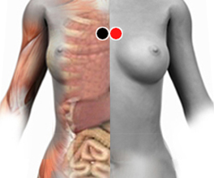

Timo
Par
timo - timo

Generalidades:
Al fallar el timo se produce Inmunodeficiencia ya que éste rige el Sistema Linfático y la producción de Linfocitos T, CD4, CD8. El timo además interviene en la formación de los huesos y el desarrollo de los genitales.
Otros síntomas pueden ser:debilidad muscular y desarmonía hormonal.
Causas:
Puede ser afectada por E. Coli o el Proteus Mirabillis. Son raros los casos en que el timo puede verse afectado por enfermedades congénitas relacionadas con fallas en el código genético; o bien por Cáncer: timomas o carcinomas tímicos.